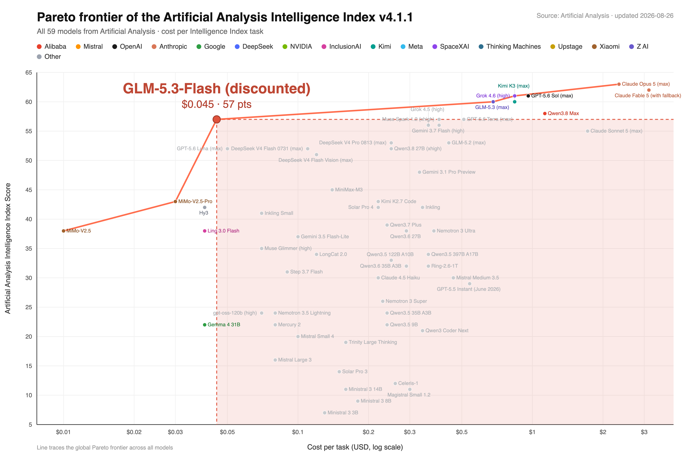
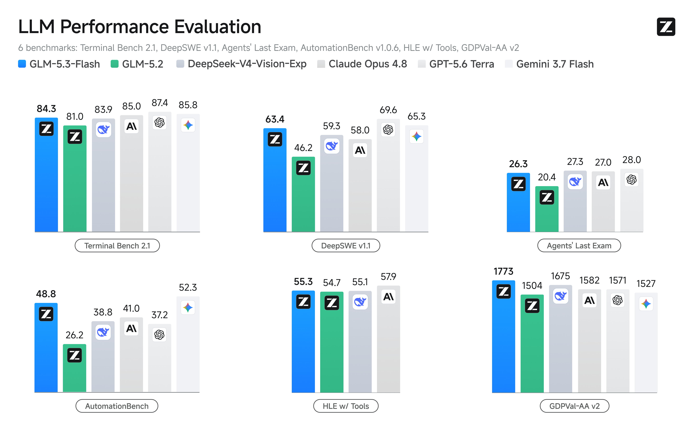
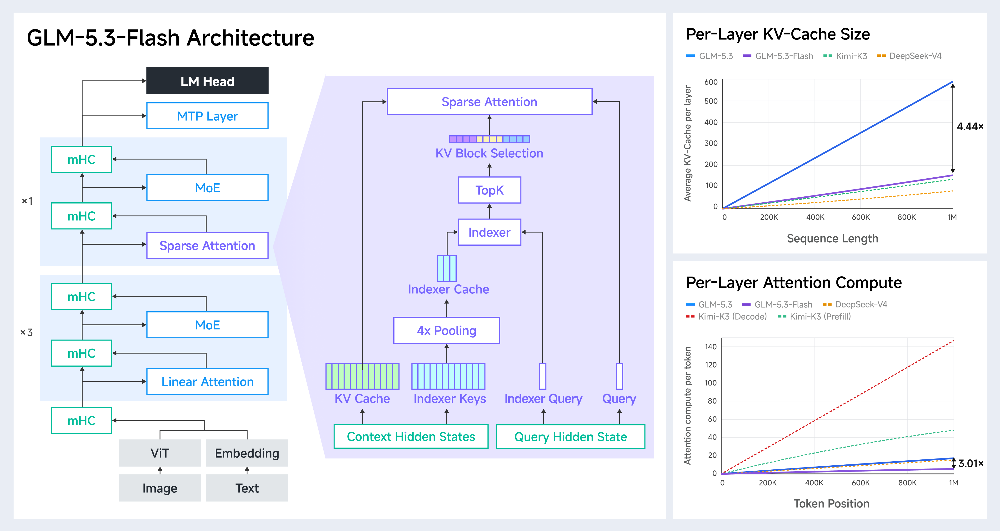
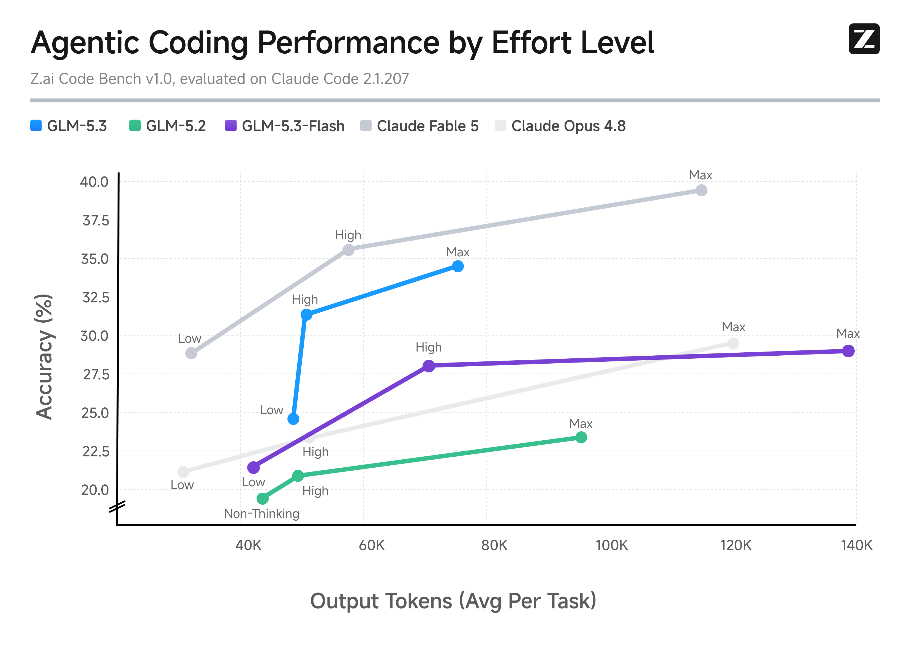
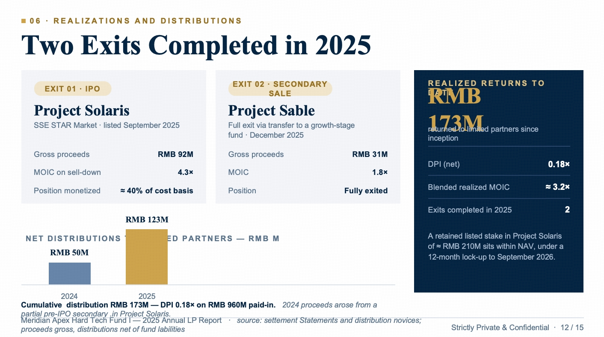
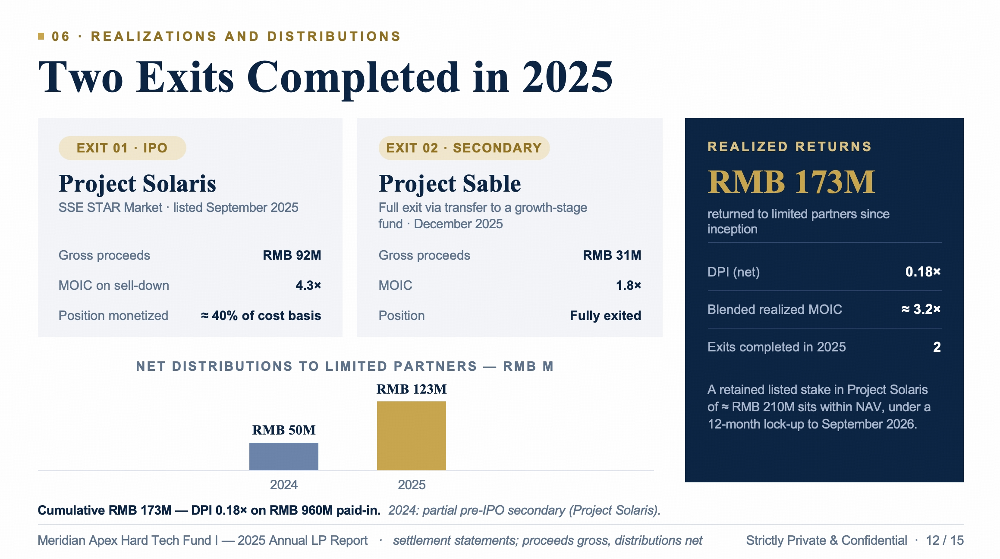

不是单纯的“小模型”，而是高效的稀疏激活系统
总容量 320B，但每次只激活约 18B。
面向长文档、代码库和长周期 agent 任务。
相较 GLM-5.3，attention compute / KV cache 显著下降。
从模型规模到实际任务的指标
| 维度 | GLM-5.3-Flash | 文章传达的意义 |
|---|---|---|
| 总参数 / 激活参数 | 320B / 18B | 大容量，小计算 |
| 层数 | 45 | GLM-4.5 系列约 92 层，减少深度开销 |
| Artificial Analysis Index | 57 | 约 $0.045 / task（折后） |
| DeepSWE v1.1 | 63.4 | GLM-5.2：46.2 |
| AutomationBench | 48.8 | GLM-5.2：26.2 |
| Z.ai Code Bench（max） | 29.0 | 接近 Opus 4.8：29.5 |
混合注意力：局部状态 + 全局检索
混合架构不是把所有 token 都做昂贵的全局 attention，而是让线性注意力承担局部建模，稀疏注意力负责找全局证据。
在 1M 上下文下，稀疏 attention 的 indexer 本身也可能成为瓶颈，因此文章引入 IndexPool：将 4 个 indexer key vector 通过加权 pooling 压缩为 1 个，降低索引计算和内存开销。
视觉不只是识图，而是进入 coding loop
写代码、页面、游戏或 3D 场景。
渲染页面、读取截图、操作 GUI。
根据视觉反馈定位问题并迭代。
GLM-5.3-Flash 将视觉能力放进 agent 的闭环，而不是只把图片作为一次性输入。对于前端开发、图表理解、文档和桌面操作，模型可以判断“什么时候需要观察”，再用视觉反馈修正下一步动作。
视觉反馈把“代码正确”扩展成“用户看到并操作起来也正确”。
性能优势集中在 coding、agent 和视觉任务
高于 GLM-5.2 的 81.0。
体现工具使用与长流程执行能力。
多模态理解能力接近强闭源模型。
这些结果需要谨慎理解：它们是 Z.ai 文章给出的模型对比数据，具体成绩受 harness、提示词、采样参数和评测版本影响。可复用的结论不是某一个分数，而是 GLM-5.3-Flash 在多类 coding/agent benchmark 上相对 GLM-5.2 的稳定提升。
面向国产 AI 芯片的 EPD 解耦服务
EPD 将 Encode、Prefill、Decode 放进独立、可调度、可扩展的 worker pool。
文章还提到 SGLang 推理引擎、TP、ReplaySSM、W8A8 量化、INT8/FP8/BF16 cache 量化和 Layer Split。相较同硬件基线，端到端 serving 性能提升约 3 倍，说明模型架构和推理基础设施必须协同设计。
对 AI Infra 的四点启示
- 稀疏激活只是第一层。真正的成本还包括 KV cache、indexer、通信、带宽和调度。
- 长上下文要做分层优化。线性 attention、稀疏检索、IndexPool 和 cache quantization 应联合评估。
- 多模态 agent 必须可观测。需要记录模型何时截图、看到了什么、为什么决定再次操作。
- 服务架构应围绕硬件瓶颈拆分。EPD 解耦让不同阶段按负载独立扩缩容，更适合异构和国产芯片集群。
博客原始图片

原始竞争性能图。

原始 coding 与 agent benchmark 图。

原始架构图。

原始内部 coding 评测图。


视觉自验证：从初始版本到修正版本。